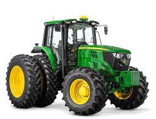

 tratores é utilizado no mundo todo tratores agricolas traz para o mercado o que há de melhor para o seu custo beneficio. Foi começado a fabricação desses tratores muitos anos atras, e tambem passui varias marcas de tratores.
Nossa missão é: "Proporcionar rendimento e qualidade de vida aos clientes".
Oferecemos profissionais experientes e com qualificação para ajudar no trabalho com os tratores no campo.